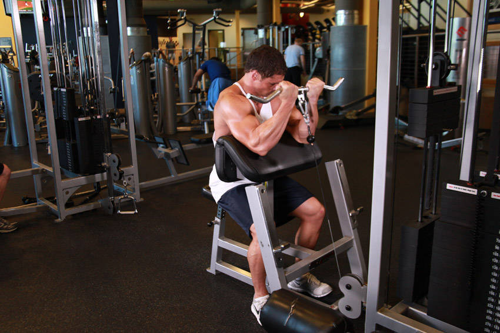

- Place a preacher bench about 2 feet in front of a pulley machine.
- Attach a straight bar to the low pulley.
- Sit at the preacher bench with your elbow and upper arms firmly on top of the bench pad and have someone hand you the bar from the low pulley.
- Grab the bar and fully extend your arms on top of the preacher bench pad. This will be your starting position.
- Now start pilling the weight up towards your shoulders and squeeze the biceps hard at the top of the movement. Exhale as you perform this motion. Also, hold for a second at the top.
- Now slowly lower the weight to the starting position.
- Repeat for the recommended amount of repetitions.